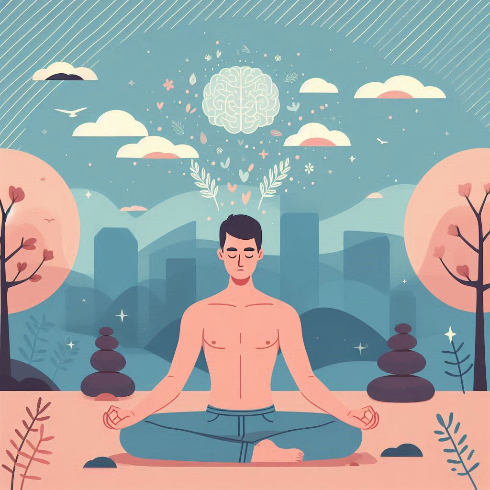
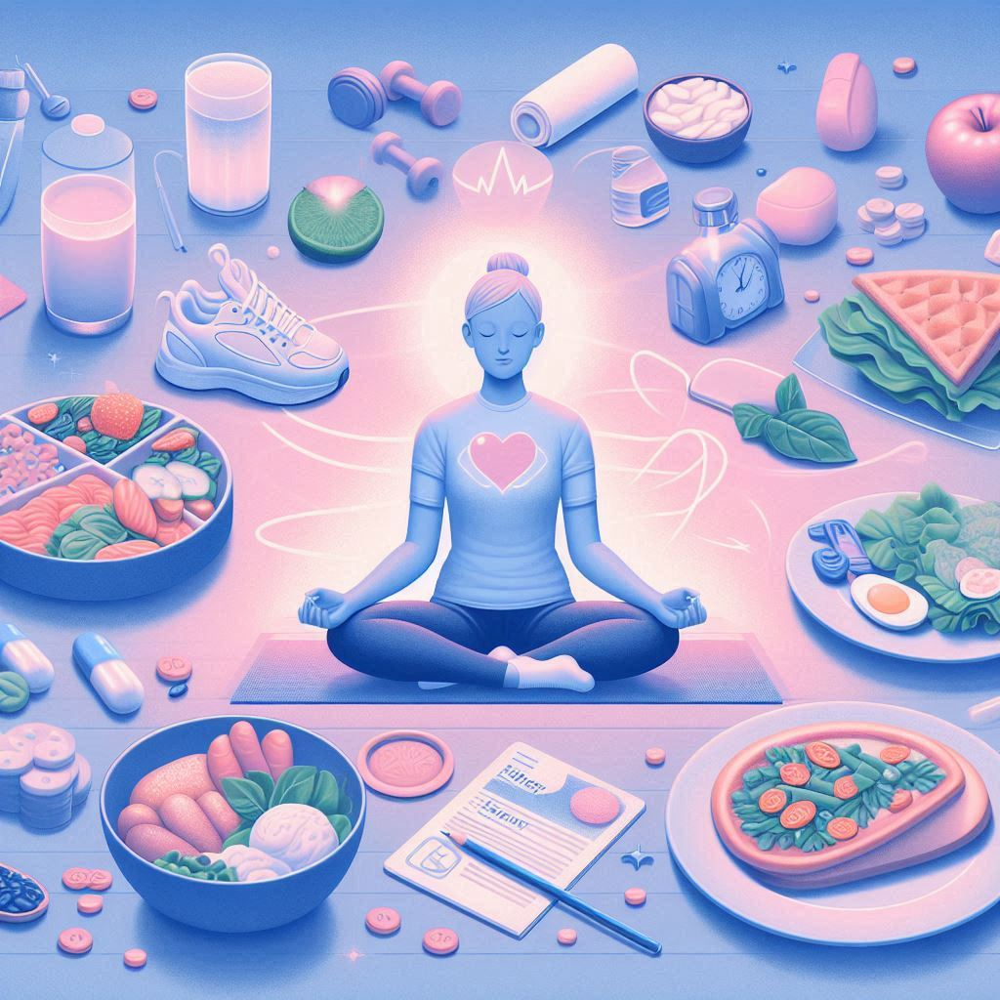

Mental Health Resources
-
Practice Self-Care
Taking care of yourself is essential for maintaining good mental health. Make time for activities that bring you joy and relaxation, such as reading, walking, listening to music, or practicing a hobby. Regular self-care can help reduce stress, boost your mood, and improve your overall well-being.
Learn more about self-care at Mind UK -

Practice Mindfulness
Mindfulness is the practice of being present and fully engaged in the current moment, without judgment. It can help reduce anxiety, improve focus, and promote emotional balance. Try simple mindfulness exercises like focusing on your breath, noticing sensations in your body, or observing your thoughts as they come and go. Even a few minutes a day can make a difference.
Learn more about mindfulness at NHS -

Maintain Healthy Habits
Healthy habits like eating balanced meals, getting enough sleep, and exercising regularly play a vital role in supporting your mental health. Physical activity can boost your mood and energy, while nutritious food and restful sleep help your mind and body recover from daily stress. Small, consistent changes can make a big difference over time.
Learn more about healthy living at NHS Live Well -
Stay Connected
Staying connected with friends, family, or your community is vital for mental well-being. Social support can help you feel understood, reduce feelings of isolation, and provide comfort during difficult times. Make an effort to reach out, share your thoughts, or simply spend time with others—even a quick message or call can make a difference.
Learn more about the importance of connection at NHS Inform -
Limit Media Consumption
Taking breaks from news and social media can help protect your mental health, especially if you feel overwhelmed by negative headlines or online discussions. Set boundaries around your screen time and choose reliable sources for information. Remember, it's okay to disconnect and focus on activities that bring you peace and joy.
Learn more about media consumption and mental health at Help Guide -
Ask for Support
It's okay to ask for help when you're struggling. Reach out to someone you trust, such as a friend, family member, or mental health professional. Sharing your feelings can provide relief and open the door to valuable support and guidance. Remember, you are not alone, and there are people and organizations ready to help you.
Learn more about asking for support at Charlie Waller -
Seek Help When Needed
If you are struggling with your mental health, it's important to seek help from a qualified professional. Mental health professionals can provide support, guidance, and treatment tailored to your needs. You might consider speaking with your GP, a counselor, or a therapist. Remember, reaching out for help is a sign of strength, not weakness, and there are many resources available to support you on your journey to well-being.
Find NHS mental health services
You deserve to feel your best. Every small, healthy choice you make—whether it's nourishing your body, getting restful sleep, or taking moments for self-care—is a step toward a stronger, happier you. Progress isn't about perfection; it's about consistency. Keep prioritizing your well-being, and trust that each mindful action is shaping a life filled with energy, balance, and self-love.
You are never alone. Your friends and family care about you, and reaching out to them can bring comfort, strength, and support. Connection is a powerful anchor—whether through a heartfelt conversation, a shared laugh, or simply knowing that someone is there to listen. When you need support, trust that the people who love you want to be there for you. Your feelings matter, and leaning on others isn't a sign of weakness—it's a sign of trust, courage, and self-care.
Stress Management Resources
You have the strength to manage stress. Each deep breath, mindful pause, and act of self-care helps you regain balance and calm. Remember, it's okay to take breaks and prioritize your well-being—your peace of mind matters.
-
Breathing Exercises
Deep breathing techniques can help calm your mind and body during stressful moments. Try slow, deep breaths—inhaling through your nose and exhaling through your mouth—to reduce tension and promote relaxation.
Learn breathing exercises at NHS -
Physical Activity
Regular exercise, such as walking, cycling, or yoga, helps release endorphins and reduce stress. Even short bursts of movement can improve your mood and energy levels.
Explore physical activity tips -
Time Management
Organizing your tasks and setting realistic goals can help you feel more in control and less overwhelmed. Use planners, to-do lists, or digital tools to prioritize and break tasks into manageable steps.
Time management advice from Psych Central -
Relaxation Techniques
Techniques such as progressive muscle relaxation, guided imagery, or meditation can help you unwind and manage stress. Find a quiet space and try a guided session online.
Relaxation tips at Mind UK -
Talk to Someone
Sharing your feelings with a friend, family member, or counselor can provide relief and perspective. Don't hesitate to reach out—support is available.
Contact Samaritans for support